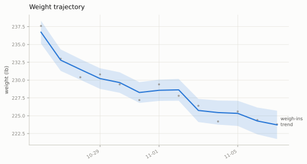
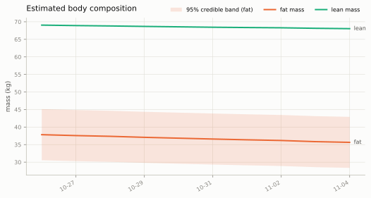
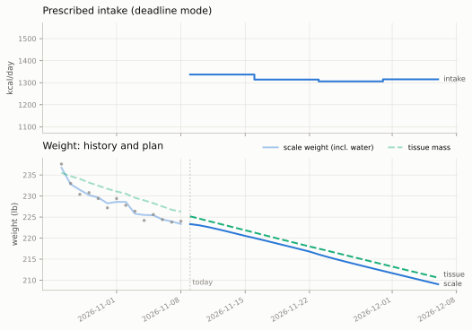
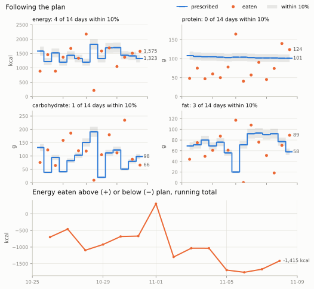
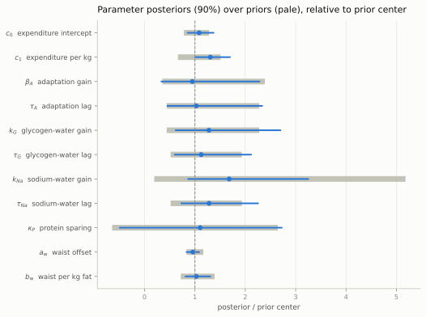
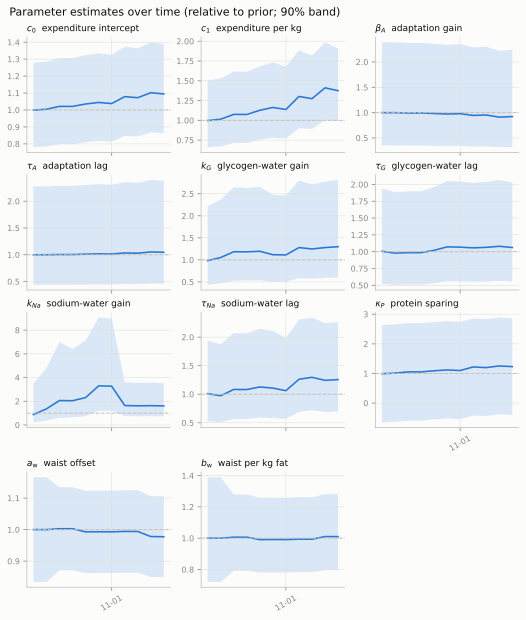
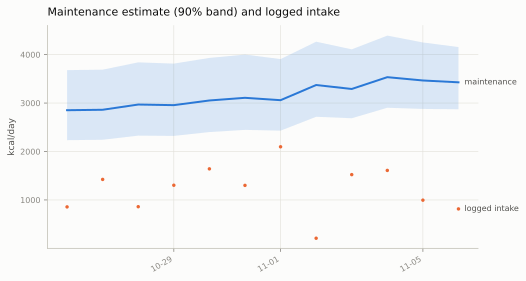
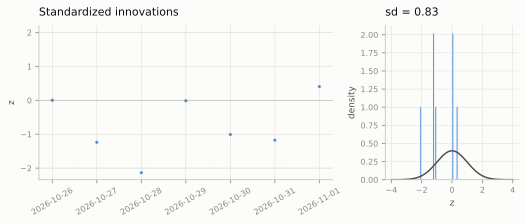
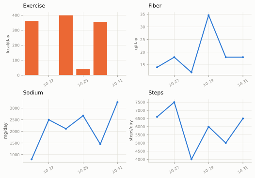

Latest figures
Every figure the wdm package draws for the real record, regenerated with the data.
Every figure wdm plots draws for the current diet, from the real record as of November 8, 2026, regenerated with the presentation’s numbers whenever new days are logged; nothing here is drawn by hand. Each caption says how to read its figure. Click or tap a figure to open it full screen and zoom in.
Weight and body composition


The plan


wdm log shows, before the model’s fiber correction. Bottom: the running total of energy eaten above or below plan. That is the panel to watch: a line climbing steadily means the weight will come off more slowly than planned. A macronutrient off on a day when energy is on plan matters less: low protein risks lean mass over weeks, and carbohydrate moves water from day to day, but neither changes how much is lost.What the model has learned



Diagnostics and inputs

